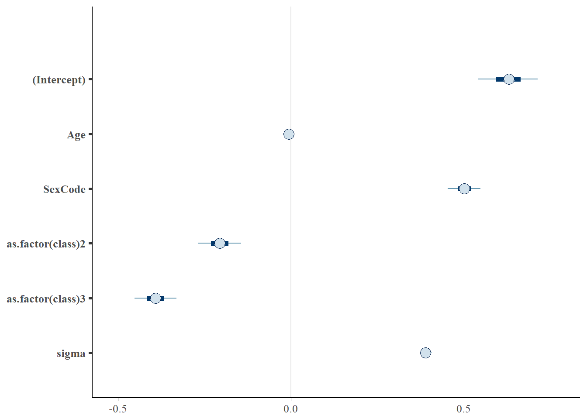

Let the variable \(x\) represent the number drawn from the bowl.
Before reaching into the bowl, I want to know: ‘’What is the probability that I’m going to pick up a number less than 10 from the bowl,’’ … That is, what is \(p(x \leq 10)\)?
Does this probability change if I tell you that all the numbers in the bowl have at least 3 digits (ie \(\geq 100\))?
Classical Statistics: No.
Probability is defined as: \(\lim_{n \rightarrow \infty} \frac{n_S}{n}\), where \(n\) is the number of times I repeat the experiment and \(n_S\) is the number of times a number \(x \leq 10\) is drawn.
\(p(x \leq 10)\) was always equal to zero, all that change was your knowledge of the experiment.
Bayesian Statistics: Almost certainly.
Probability is a measure of subjective belief about how likely an event is, based on prior understanding and new information.
Prior \(\rightarrow\) Information \(\rightarrow\) Posterior
Bayesian statistics integrates the epistemological uncertainty of statistical estimation into its core procedures. It’s fundamental goal is to assess and improve the accuracy of one’s beliefs based on a set of identifying statistical assumptions.
Classical statistics attempts to instead conduct inference on the (unknown) underlying reality, based on its own set of identifying assumptions.
** NOT mutually exclusive **
First, you will need to install RStan and RTools from this link.
Then install the rstan and rstanarm packages.
# Run only once
install.packages("rstan", repos = "https://cloud.r-project.org/",
dependencies=TRUE)
install.packages("rstanarm", dependencies=TRUE)library(rstan)
rstan_options (auto_write=TRUE)
options (mc.cores=parallel::detectCores ()) # Run on multiple cores
library(rstanarm)
library(tidyverse)First, we load the dataset using the rio package.
#PISA2015 <- import("cy6_ms_cmb_stu_qqq.sas7bdat") %>% filter(CNT == "SWE")
#glimpse(PISA2015)
#install.packages("titanic")titanic <- import("https://raw.githubusercontent.com/vincentarelbundock/Rdatasets/master/csv/datasets/Titanic.csv")
# Display titanic data
titanic# Recode Class
titanic$class <- recode(titanic$PClass, "*"="NA", "1st"="1", "2nd"="2", "3rd"="3")
titanic$class [titanic$class == "NA"] <- NA
titanic$class <- as.numeric(titanic$class)TitanicGLMbasic <- stan_glm(Survived ~ Age + SexCode + as.factor(class),
data = titanic, family = gaussian())summary(TitanicGLMbasic)##
## Model Info:
##
## function: stan_glm
## family: gaussian [identity]
## formula: Survived ~ Age + SexCode + as.factor(class)
## algorithm: sampling
## priors: see help('prior_summary')
## sample: 4000 (posterior sample size)
## observations: 756
## predictors: 5
##
## Estimates:
## mean sd 2.5% 25% 50% 75% 97.5%
## (Intercept) 0.6 0.1 0.5 0.6 0.6 0.7 0.7
## Age 0.0 0.0 0.0 0.0 0.0 0.0 0.0
## SexCode 0.5 0.0 0.4 0.5 0.5 0.5 0.6
## as.factor(class)2 -0.2 0.0 -0.3 -0.2 -0.2 -0.2 -0.1
## as.factor(class)3 -0.4 0.0 -0.5 -0.4 -0.4 -0.4 -0.3
## sigma 0.4 0.0 0.4 0.4 0.4 0.4 0.4
## mean_PPD 0.4 0.0 0.4 0.4 0.4 0.4 0.5
## log-posterior -364.8 1.8 -369.1 -365.7 -364.4 -363.5 -362.5
##
## Diagnostics:
## mcse Rhat n_eff
## (Intercept) 0.0 1.0 2203
## Age 0.0 1.0 3105
## SexCode 0.0 1.0 4000
## as.factor(class)2 0.0 1.0 2845
## as.factor(class)3 0.0 1.0 2753
## sigma 0.0 1.0 4000
## mean_PPD 0.0 1.0 4000
## log-posterior 0.0 1.0 1875
##
## For each parameter, mcse is Monte Carlo standard error, n_eff is a crude measure of effective sample size, and Rhat is the potential scale reduction factor on split chains (at convergence Rhat=1).plot(TitanicGLMbasic)
#launch_shinystan(TitanicGLMbasic)